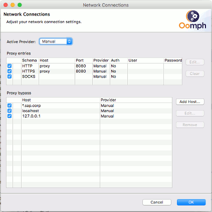
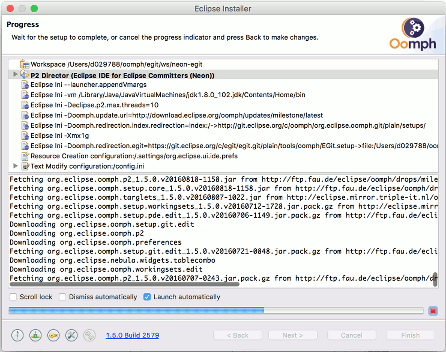

| Automated Developer Setup |

|
|

|
| EGit Contributor Guide |
|
Manual Developer Setup |
Automated Developer Setup
The fastest developer setup for contributing to JGit/EGit is to use the Eclipse Installer and the
EGit project setup to prepare an Eclipse IDE for JGit/EGit:
- download and unpack the
Eclipse Installer
- start the Eclipse Installer
- select the advanced mode

- if the right most icon in the bottom toolbar of the installer rotates, there is an update available for the installer, which should be installed before continuing
- if you are behind a proxy, change the proxy settings from the toolbar at the bottom

- on the product page select "Eclipse IDE for Eclipse Committers" and click "Next"

- on the project page select project "EGit" and click "Next"

- on Variables page accept default target platform, to fine tune variables click "Show all variables", click "Next"
- on the Confirmation page click "Finish"

- the installer installs the chosen IDE and starts it, as soon as the installer says "Press Finish to close the dialog" you can close the installer window
- the newly installed IDE will automatically clone the JGit and EGit repositories and configure the workbench for JGit/EGit development. You can observe the setup progress in the toolbar, if necessary you can reopen the setup wizard by clicking its icon in the status bar

- when the setup finished the IDE should looks similar to this

If you want to improve the EGit project setup, check the setup file in tools\oomph\EGit.setup (in your newly cloned egit repository). You can find more information about Oomph at
|
|

|
|
| EGit Contributor Guide |
|
Manual Developer Setup |